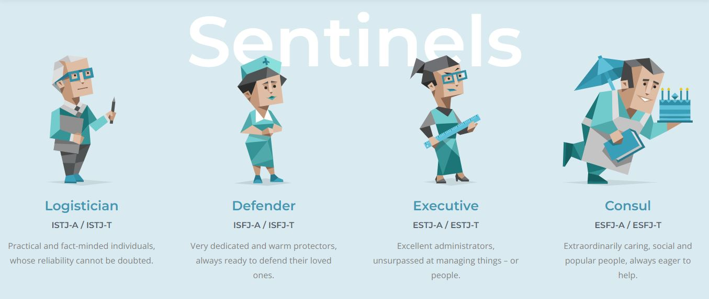

"Saya ingin kebebasan untuk ekspresi penuh kepribadian saya."
- Mahatma Gandhi

- Mahatma Gandhi
.
.
Setiap individu manusia mempunyai tipe kepribadian yang berbeda. Ada yang memiliki karakter lemah lembut, periang, dan ramah. Ada pula yang mempunyai kepribadian lain seperti pemalu, keras kepala, dan lainnya.
Ada banyak sekali tipe kepribadian seperti yang diungkapkan oleh para ahli. Mulai dari Hippocrates dan Galenus, C.G Jung, Gerart Heymans, dan juga Eduard Spranger. Para ahli tersebut memberikan sebuah pandangan dan pendapat mengenai tipe kepribadian dari sudut pandang yang berbeda.
.
.
.
Source : https://www.16personalities.com/

seseorang yang mengisi ulang energinya saat berada di sekitar orang. Bukan berarti enggan sendirian, tetapi lebih suka ditemani orang lain

seseorang yang suka berada di lingkungan yang tidak begitu ramai, ia membutuhkan waktu sendiri untuk merasa recharge (mendapatkan energi) kembali.

- Martin Luther King, Jr.